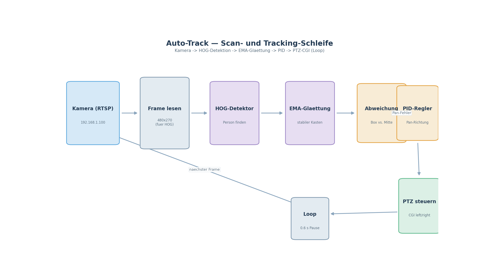

UtutCam — Auto Track (Personenverfolgung mit PTZ-Kamera)¶
1. Überblick¶
Auto Track ist das Herzstück der UtutCam: Es erkennt eine Person im Kamerabild in Echtzeit und steuert die Kamera so, dass die Person immer mittig im Bild bleibt. Wird die Person gefunden, folgt die Kamera ihr; bewegt sie sich nicht (Person mittig, im Deadzone-Bereich), steht die Kamera vollkommen still.
Die Erkennung läuft auf dem PC (lokal) — das Bild kommt per RTSP vom Kamera-Server, wird mit einem Neuronalen Netz (oder klassischem HOG-Detektor) ausgewertet und die Kamerabewegung wird über das PTZ-CGI-Protokoll der Hi3510-Kamera geschickt.

Simulation: auto_track_simulation.mp4
(~59 s, 20 FPS) zeigt die komplette Track-Schleife in der simulierten Welt —
Person erkennen, EMA-Glättung, Fehler zur Bildmitte und die PTZ-Nachführung.
2. Startbefehle¶
Wichtig: Alle Skripte laufen vom Projektstamm
C:\Users\youss\Desktop\UtutCamaus (wegensys.path.insert(0, ".")).
2.1 Echte Kamera (Auto Scan + Track)¶
cd C:\Users\youss\Desktop\UtutCam
C:\Users\youss\AppData\Local\Python\pythoncore-3.14-64\python.exe auto_track\auto_scan_track_cgi.py
Tasten (während das Bild sichtbar ist):
| Taste | Aktion |
|---|---|
S |
Scan-Modus (Kamera pendelt weit links/rechts) |
T |
Track-Modus (Kamera folgt der Person) |
2 / 4 |
Person manuell links/rechts schieben (Diagnose) |
Q / Esc |
Programm beenden |
Beim Start ist der Track-Modus aktiv und die Kamera beginnt sofort zu tracken (sobald eine Person erkannt wird).
2.2 Simulation (keine Kamera, nur Logik + Videoaufnahme)¶
cd C:\Users\youss\Desktop\UtutCam
C:\Users\youss\AppData\Local\Python\pythoncore-3.14-64\python.exe auto_track\sim_ptz_test.py
Die Simulation zeichnet eine virtuelle Welt, eine Person (Strichmännchen) und einen simulierten Kamerablick mit Pan-Anzeige unten. Sie demonstriert exakt dieselbe Track-Logik wie im echten Betrieb — ohne die echte Kamera.
- Video-Aufnahme: Die Simulation zeichnet sich selbst als Video auf
(
auto_track\sim_aufnahme.mp4, ~50 s, 20 FPS) und beendet sich danach automatisch. - Tasten:
S= Scan,T= Track,7/9= Person nach links/rechts laufen lassen,Q/Esc= Beenden.
Das aufgezeichnete Video ist unter
simulationen/auto_track_simulation.mp4
zu finden.
3. Wie es funktioniert (Ablauf pro Frame)¶
- Frame holen:
RTSPStreamliest in einem eigenen Thread die neuesten Frames und gibt den aktuellsten zurück (Blockierung wird vermieden). - Person erkennen: Der Detektor bewertet das Bild:
- HOG-Detektor (Standard, „ganz normaler Detektor“): klassischer Histogram-of-Oriented-Gradients Detektor von OpenCV mit „DefaultPeopleDetector“. Läuft stabil bei ~20–30 FPS auf einer halben Auflösung (480×270). Ergebnis: 1 stabile Box.
- Alternativen (per Quelltext umschaltbar):
JahongirHumanDetector(YOLOv8-CrowdHuman auf Colab trainiert),OpenVinoHumanDetector(gleiches Modell als OpenVINO-IR für CPU-Beschleunigung). - Kasten stabilisieren: Beim HOG-Detektor wird die Box über eine EMA-Glättung geglättet — der Kasten springt nicht mehr und wird nicht ständig größer/kleiner (das Problem trat beim vorherigen DeepSort-Tracker auf).
- Mittelpunkt berechnen: Aus der Box wird die X-Mitte bestimmt, der
Abstand zur Bildmitte ergibt den Fehler in Pixeln (
error_px). - PTZ steuern (asynchron!): Der
PtzWorkerläuft in einem eigenen Thread und sendet PTZ-Schritte im Hintergrund: - Fehler links vom Zentrum → Kamera nach links
- Fehler rechts vom Zentrum → Kamera nach rechts
|Fehler| ≤ DEADZONE_PX (60)→ Kamera steht still (kein Drift!)- Zwischen zwei CGI-Steps liegen 0.6 s (die CGI-Requests der Kamera sind langsam; das Intervall schützt die Kamera vor Überlastung).
Deadzone — die „stille Mitte"¶
Die Kamera soll stillstehen, wenn die Person mittig ist. Dafür gibt es die
DEADZONE_PX = 60. Solange sich die Person also innerhalb von ±60 Pixeln der
Bildmitte befindet, wird kein einziger PTZ-Schritt gesendet.
Person → Kamera → Fehler | Aktion
─────────────────────────────────────────────
-180 px │ Kamera<>LINKS
-30 px │ (DEADZONE) → STOPP
0 px │ (DEADZONE) → STOPP
+45 px │ (DEADZONE) → STOPP
+160 px │ Kamera>RECHTS
4. Module & Modelle¶
4.1 Detektoren (in auto_track/scanning.py)¶
| Klasse | Modell | Beschreibung | FPS (lokal) |
|---|---|---|---|
HogHumanDetector |
OpenCV HOG DefaultPeopleDetector |
klassisch, stabil, EMA-geglättet | ~20–30 |
JahongirHumanDetector |
yolov8_human/weights/best.pt |
YOLOv8-CrowdHuman, auf Google Colab trainiert, PyTorch | ~8–15 |
OpenVinoHumanDetector |
jahongir_ov/jahongir_fixed.xml |
dasselbe Modell als OpenVINO-IR (416 px), CPU | ~19 (incl. Tracker) |
PersonDetector |
models/yolov8n_crowdhuman_best.pt |
Ultralytics-Wrapper (älter) | – |
4.2 PTZ-Steuerung¶
| Klasse | Protokoll | Zweck |
|---|---|---|
CgiPtzController |
Hi3510 CGI (yt_left.cgi / yt_right.cgi …) |
Schrittsteuerung der echten Kamera (Standard) |
PTZController |
ONVIF (Velocity) | ältere/ONVIF-Kamera 192.168.178.43 |
4.3 Kamera¶
| Klasse | Zweck |
|---|---|
RTSPStream |
Thread-basierter RTSP-Leser der Kamera, hält den neuesten Frame |
5. Treibende Konstanten¶
Die wichtigsten Einstellungen stehen oben in auto_track/auto_scan_track_cgi.py:
| Konstante | Wert | Bedeutung |
|---|---|---|
DEADZONE_PX |
60 |
Mittiger Bereich in Pixeln, in dem die Kamera stillsteht |
STEP_MAX |
6.0 |
max. Schrittzahl je CGI-Befehl |
STEP_LO |
2.0 |
Mindestschritte |
ERR_LO |
65 |
Fehler, ab dem volle Schritte fahren |
ERR_HI |
200 |
Fehler, ab dem volle Schritte fahren |
MISS_TOLERANZ |
12 |
Frames ohne Person, bis keine Zielwahl mehr |
MISS_TRACK_TO_SCAN |
14 |
Frames ohne Person, bis in Scan gewechselt wird |
CONF |
0.30 |
Konfidenz-Schwelle des Detektors |
6. Informationen zu Google Colab¶
Das verwendete Personen-Modell (YOLOv8, CrowdHuman-Variante) wurde auf Google Colab trainiert:
- Colab-Notebooks: unter
colab/—build_ututcam_notebook.py(Webcam-Live-Detektion) undbuild_ututcam_notebook_v2.py(4-Fenster-System, lädtUtutBest/UtutGun/UtutHand.pt+faces.json+fahndungen.jsonvom GitHub-Releasev1des ReposNovaAixYoussef/ututcam-models). - Dort wurden Modell-Exporte (PyTorch → ONNX → OpenVINO) für die CPU-Ausführung vorbereitet. Der Export nach OpenVINO-IR wird lokal genutzt, um hohe Bildraten ohne GPU zu erreichen.
7. Häufige Probleme¶
| Symptom | Ursache / Lösung |
|---|---|
| Kamera reagiert nicht mehr | Zu viele CGI-Requests → Kamera friert ein. Abwarten (2–5 min) oder Stromunterbrechung. Immer 0.6 s Schritt-Intervall lassen. |
| Video ruckelt | CGI-Steps blockierten die Schleife → seit PtzWorker (eigener Thread) behoben. |
| Kasten wird mal größer, mal kleiner | trat mit DeepSort auf → seit EMA-geglättetem HOG-Detektor behoben. |
| Person wird nicht getrackt | Konfidenz-Schwelle (CONF) prüfen, Person muss groß genug im Bild sein. |
8. Verwandte Dateien¶
auto_track/auto_scan_track_cgi.py— Hauptskript Scan+Trackauto_track/scanning.py— Detektoren, Kamera, PTZ-Controllerauto_track/sim_ptz_test.py— Simulation + Videoaufnahmeauto_track/jahongir_ov/— OpenVINO-IR des Personenmodellsauto_track/yolov8_human/— trainiertes YOLOv8-Modell + Architekturdocs/bilder/gesichts_netzwerk.svg— neuronale-Netz-Visualisierung (Gesichtserkennung)docs/simulationen/— Videoaufnahmen der Simulationen